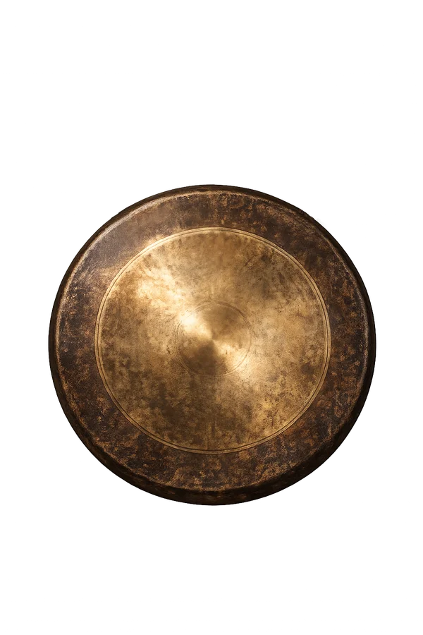

Die Meditations-App für dein Handy
Drei Klangschalen zur Auswahl. Die gewählte klingt am Anfang und am Ende deiner Meditation. Dazwischen Stille. Du kannst auch einen eigenen MP3-Sound hinzufügen, wenn du möchtest.
Drei lebendige Welten: klassisch mit Buddha-Bild und Kerze, Erwachen mit animiertem Sonnenaufgang über den Bergen (mit Sternschnuppen in der Morgendämmerung), oder Abendrot mit einem sinkenden Sonnenuntergang über dem Meer. Dazu sieben schlichte Farbtöne, von Schwarz bis Warmes Gelb.
Auf Wunsch dunkelt sich der Bildschirm von selbst ab, damit dich kein Licht stört. Einmal antippen, dann ist er wieder hell.
Wenn du möchtest, klingt mitten in der Meditation ein zweiter Gong. Du wählst den Zeitpunkt selbst – eine sanfte Markierung in der Stille.
Keine Werbung, kein Abo, kein Konto. Keine Datensammlung. Funktioniert offline, ohne Internet.
Wähle dein Gerät. Die Installation dauert eine Minute.
Lade die APK herunter und installiere sie. Beim ersten Mal musst du „Installation aus unbekannten Quellen" einmalig erlauben.
⬇ APK herunterladeniPhones haben keinen klassischen App-Download. Augenblick wird stattdessen über Safari zum Home-Bildschirm hinzugefügt – funktioniert genauso wie eine richtige App.
📱 In Safari öffnen